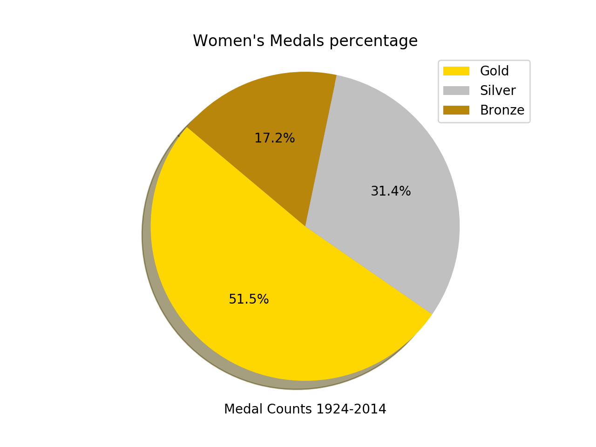

This website is all about the comparision of Canadian Men and Women. It shows the data of Gold and bronze medals scored by men and women. And also tell the percentage of men and women that received medals in Olympic Games that were held from 1924-2014.
men vs women gold medals
Gold medals by men
This Bar graph represents the number gold medals that men received from 1924-2014.In the starting years men received the most number of medals but
the count came to half from year 1952-68And the count was lowest in the upcoming years. But for women, the women acheived lowest in starting years But the level raised a lot from 1992 to 2014.
women gold medals
Gold medals by women
This Bar graph represents the number gold medals that women received from 1924-2014. The Beginning was very slow but gradually the number of gold medals won by women Increased to max level between the years of 1992 and 2002. There was little downfall in year 2006,But again the gold medals count kept on increasing until the year 2014.
percentage
Men percentage
This pie chart shows the percentage of medals that men won for all recent years of Olympic Games.gold medals were scored by majority of men I.e. 55.6%. While the count of silver and bronze was in minority.Silver and bronze added to count of 30.4% and 14.0% respectively, from years 1924-2014.

percentage
Women Percentage
This pie chart indicates the value of medals won by Canadian women.This pie chart is very similar to men’s pie chart of medal percentage. The women that slight differences then men.The count of bronze medals was more for women than men, as it is clearly showing the difference of 3.2%
bronze medals
Bronze Medal count by men
The line chart represents the number of bronze medals received by men in particular years.It can be clearly observed that the graph started from zero and hiked till the top from the years 1950-1975. But then in the later part this count was brought down to 4 bronze medals in 2014.
bronze medals
Bronze Medal count by Women
This line chart represents the number of bronze medals scored by women from 1924-2014.This is totally opposite case of men , as they scored more in middle years but remained low at the latest Olympic games 2014 , but women remained receiving low count of bronze medals until 1980 . And then Suddenly this record hiked to the maximum level by the year 2002. And in 2014, Canadian women Just scored 1 bronze medal.